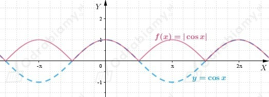
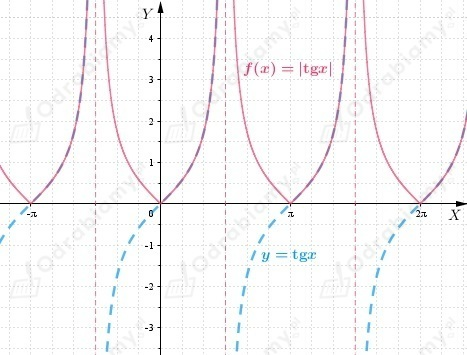
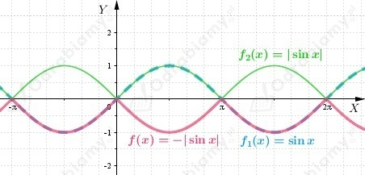
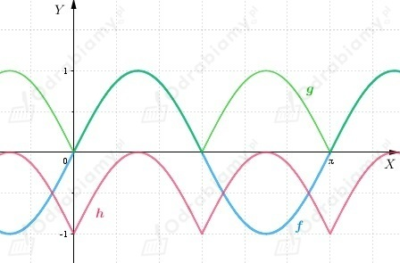
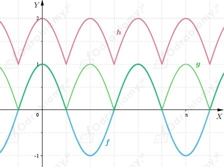

a)
Wykres funkcji f otrzymujemy przez odbicie symetryczne względem osi OX tej części wykresu funkcji g(x)=cosx, która znajduje się pod osią OX. Pozostałą część wykresu pozostawiamy bez zmian.
Wykres funkcji f

Okres podstawowy funkcji f
b)
Wykres funkcji f otrzymujemy przez odbicie symetryczne względem osi OX tej części wykresu funkcji g(x)=tgx, która znajduje się pod osią OX. Pozostałą część wykresu pozostawiamy bez zmian.
Wykres funkcji f

Okres podstawowy funkcji f
c)
Szkicujemy kolejno wykresy funkcji
Wykres funkcji f

Okres podstawowy funkcji f
a)
Z treści zadania wiemy, że
Wykresy funkcji

Okres podstawowy funkcji f: 𝜋
Okres podstawowy funkcji g: 𝜋/2
Okres podstawowy funkcji h: 𝜋/2
b)
Z treści zadania wiemy, że
Wykresy funkcji

Okres podstawowy funkcji f: 4/6𝜋 = 2/3𝜋
Okres podstawowy funkcji g: 2/6𝜋 = 𝜋/3
Okres podstawowy funkcji h: 𝜋/3